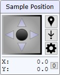
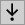
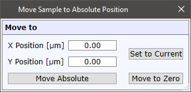
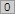
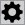
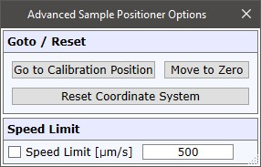

|
样品定位
|
可以使用 UI摇杆控制 或 EasyLink控制器 来控制显微镜十字台/XY样品定位器：

十字台（摇杆控制）
控制样品定位器。速度取决于物镜放大倍率。
将样品移动到鼠标位置
如果激活，可单击视频图像中的某处，将探针位置移动到该位置。
可以通过再次按下按钮或按下视频图像右下角的样品位置标签来关闭此模式。

将样品移动到绝对位置打开一个小弹出窗口，可在其中输入绝对 XY 坐标并移动到该位置：

X/Y
显示当前十字台位置（单位：µm）。
设为当前
将 X/Y 编辑值设置为当前位置。
移动到零点
将样品定位器移动到位置 0 | 0。
绝对移动
将样品定位器移动到 X/Y 编辑框中定义的位置。

设零（按钮）将 XY 位置设为零。

高级样品定位器选项
转到校准位置
将样品定位器移动到其校准位置。
重置坐标系
重置坐标系。
速度限制
如果选中，样品定位器的速度将在任何移动（手动移动、测量期间的自动移动）中受到限制。
重新启动软件时速度限制将关闭。